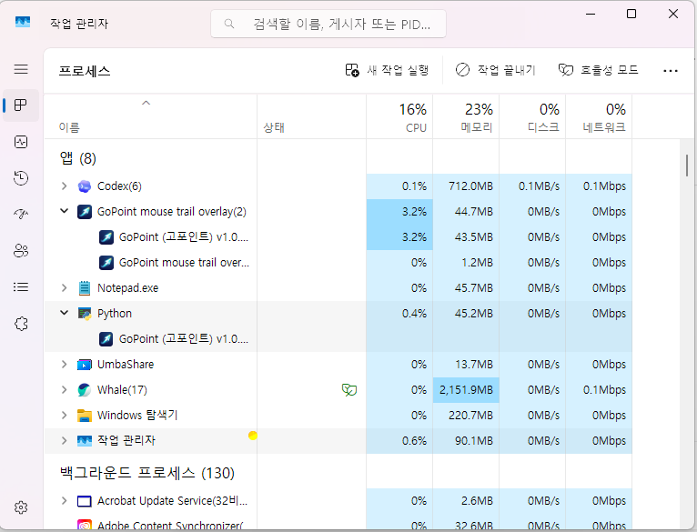

주요 기능
- Constant, Dots, Tapered 스타일 지원
- 다중 색상 그라데이션과 폭, 길이, 투명도 조절
- 시스템 트레이, 시작프로그램 등록, 자동 업데이트
- 저사양 모드 단계 조절
- 중복 실행 방지
Windows Mouse Trail Overlay
GoPoint는 튜토리얼 영상, 프레젠테이션, 방송, 화면 공유 중에 마우스 위치를 더 또렷하게 보여주는 Windows 전용 오버레이 유틸리티입니다. 스프링 기반 추적과 단계형 저사양 모드로 부드러움과 가벼움을 같이 잡았습니다.
v1.0.12 사용자는 자동 업데이트 판별 오류 때문에 이번 한 번은 수동 설치가 필요합니다.
Performance
프레임 갱신과 미리보기 타이머를 최적화해 오래된 PC 환경에서도 CPU 점유를 낮추는 방향으로 정리했습니다.
